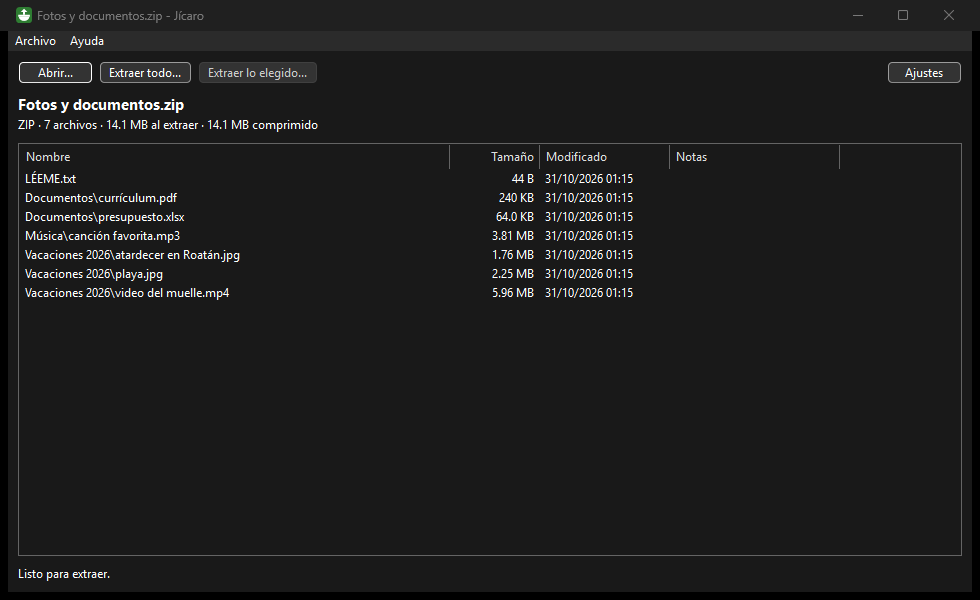

Descompresor · Windows 10 y 11 (64 bits)
Jícaro, el descompresor gratis y sin anuncios.
Como el jícaro, el fruto hondureño que sirve de vasija: guarda y saca lo que traen tus archivos ZIP, RAR y 7z, también los que tienen contraseña y los que bajan en varias partes.
Gratis, sin publicidad y de código abierto · Código en GitHub

Qué hace
- Abre ZIP, RAR, 7z, ISO, TAR y más, también los que tienen contraseña.
- Junta los archivos en varias partes (.part01.rar, .r00, .7z.001, .z01) y te dice si falta alguna.
- Te pide la contraseña y nunca prueba claves por su cuenta. Nunca escribe fuera de la carpeta que eliges.
- «Extraer aquí» en el clic derecho: es opcional y se activa en Ajustes. Para quitarlo, desmarca la casilla o abre
Quitar-clic-derecho.bat, que viene en el .zip.
Cómo instalarlo
- Baja el .zip con el botón «Descargar para Windows».
- Descomprímelo: clic derecho sobre el archivo y «Extraer todo». No hace falta instalar nada. Deja
7z.dlljunto aJicaro.exe: con ese archivo abre los RAR y los 7z. - Abre
Jicaro.exe. Si Windows muestra «Windows protegió su PC», es porque el programa es nuevo y todavía no tiene firma digital (un sello de pago que Windows reconoce): pulsa «Más información» y luego «Ejecutar de todas formas». - Arrastra un archivo a la ventana o pulsa «Abrir...». Si quieres «Extraer aquí» en el clic derecho, actívalo en Ajustes.
Si Windows no deja abrir el programa
Nuestros programas todavía no tienen firma digital, y por eso Windows puede frenarlos de dos maneras:
- «Windows protegió su PC» (SmartScreen). Pulsa «Más información» y después «Ejecutar de todas formas».
- «Control inteligente de aplicaciones». Si lo tienes activado, puede bloquear el programa sin darte la opción de abrirlo igual. Microsoft explica que no se puede permitir un solo programa: la única salida es apagar esa protección en Seguridad de Windows > Control de aplicaciones y exploradores. Es tu decisión; con Windows al día se puede volver a encender después. (Fuente: preguntas frecuentes de Microsoft)
Estamos preparando la firma digital para que esto deje de pasar. Mientras tanto, puedes comprobar que el archivo es el original con su huella SHA-256 y, en las versiones nuevas, con gh attestation verify (mira «Cómo saber que es el original», más abajo).
Lo que todavía no hace
Jícaro solo extrae: no crea archivos RAR ni 7z. Para abrir un RAR o un 7z necesita el archivo 7z.dll, que viene en el mismo .zip.
Cómo saber que es el original
Cada versión la arma GitHub a partir del código público, y junto a cada .zip publicamos su huella SHA-256 (un código único que tiene cada archivo; está en el archivo que termina en .sha256). Para comprobarla, abre PowerShell en la carpeta de la descarga y escribe Get-FileHash seguido del nombre del .zip. Si sale la misma huella, el archivo es el original. Además, cada .zip tiene una atestación pública (una constancia de que lo armó GitHub con el código del repositorio). Se comprueba con la herramienta gh de GitHub: gh attestation verify archivo.zip --repo Brizna-Soft/jicaro.
¿Algo no funciona?
Cuéntanos en GitHub y lo arreglamos a la vista de todos. Si te sirve, también puedes apoyarnos con una donación.